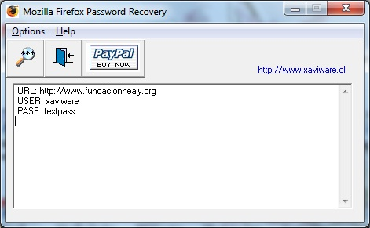

XaviWare Software
Ltda. - Impelled to be more
Mozilla Firefox Password
Recovery instantly retrieves the login and password information user accounts stored in Mozilla Firefox 3.5. / 3.6. / 4.0 and 5.0
Features
Back To Menu
! bug fixed
+ improvement/modification
- wish list
Version 5.0.0 - 20110814
---------------------------------
[+] AntiDebbuger Protection is added.
[+] Other Products Menu is Added.
[!] Support for Firefox versions 4.0 & 5.0
Version 1.0.2 - 20100306
------------------------
[+] Romanian Language Interface is added. [Translator - Cristian Stefan]
Version 1.0.1 - 20100219
------------------------
[!] Registration key check is fixed
[+] Bulgarian Language Interface is added. [Translator - Kaloyan Stolinov]
[+] Show Password Message Format is improved.
Version 1.0.0 - 20100214
------------------------
First public release.
Back To Menu
Mozilla Firefox Password
Recovery program is very easy to use:
you need only do 2 steps.
- Open the software.
- Click to "Recover Passwords" button. The stored passwords
are recovered instantly.

Back To Menu
XaviWare Software Home Page
http://www.xaviware.com
http://www.xaviware.cl
XaviWare Software e-Mail
xaviware@xaviware.cl
Mozilla Firefox Password Recovery Home Page
http://www.xaviware.cl/pwdmff.aspx
Technical Support e-Mail
support@xaviware.cl
Technical Support Phone
+56 9 7 845 73 14
Sales Division e-Mail
sales@xaviware.cl
Back To Menu
This is not free Software!
If you want to use the limitations free program you must pay a
registration fee. For information about prices and ordering details
please go to XaviWare Software Ltda. website: http://www.xaviware.cl/purchase.aspx
All products can be ordered worldwide. Online orders are accepted as
well as traditional phone, fax, mail/check and corporate purchase
orders.
To order online:
- Run Mozilla Firefox Password Recovery program
- Select the Order On-line item in the Help menu
- Click the [Buy Now] button-link for the product you would
like to purchase
- Follow ordering instructions
Online orders are fulfilled in just a few minutes 24 hours a day 7 days
a week. A receipt with download instructions and your personal Serial
Number will be sent to you by e-mail in a few minutes after placing an
order when ordering online. Other types of orders are processed next
business day, mail orders are processed next business day upon receipt.
Back To Menu
This user license agreement
(the "AGREEMENT") is an
agreement between you (individual or single entity) and XaviWare
Software Ltrda., for the XaviWare Software (the "SOFTWARE") that is
accompanying this AGREEMENT.
The SOFTWARE is the property of XaviWare Software Ltda. and is
protected by copyright laws and international copyright treaties. The
SOFTWARE is not sold, it is licensed.
TRIAL VERSION
If you accept the terms and conditions of this AGREEMENT, you have
certain rights and obligations as follows:
YOU MAY:
YOU MAY NOT:
DISTRIBUTION:
You are hereby
licensed to make as many copies of the TRIAL VERSION as you wish and
distribute them to anyone provided that all files are intact. You must
distribute the install form of the TRIAL VERSION (not the files
resulting from an installation). You are not allowed to sell the TRIAL
VERSION (except for shipment and handling charges). Computer Magazines
are authorized to distribute it on any Cover Disk or CD-ROM without any
permission. Please inform us by e-mail each time you distribute the
TRIAL VERSION.
WARRANTY DISCLAIMER
The SOFTWARE is supplied "AS IS". XaviWare disclaims all warranties,
expressed or implied, including, without limitation,the warranties of
merchantability and of fitness for any purpose. The user must assume
the entire risk of using the SOFTWARE.
DISCLAIMER OF DAMAGES
XaviWare Software Ltda. assumes no liability for damages, direct or
consequential, which may result from the use of the SOFTWARE, even if
XaviWare has been advised of the possibility of such damages. Any
liability of the seller will be limited to refund the purchase price.
Back To Menu
This Software-Site is © Copyright Javier Orellana
2000-2011, All Rights Reserved
http://www.xaviware.com
http://www.xaviware.cl